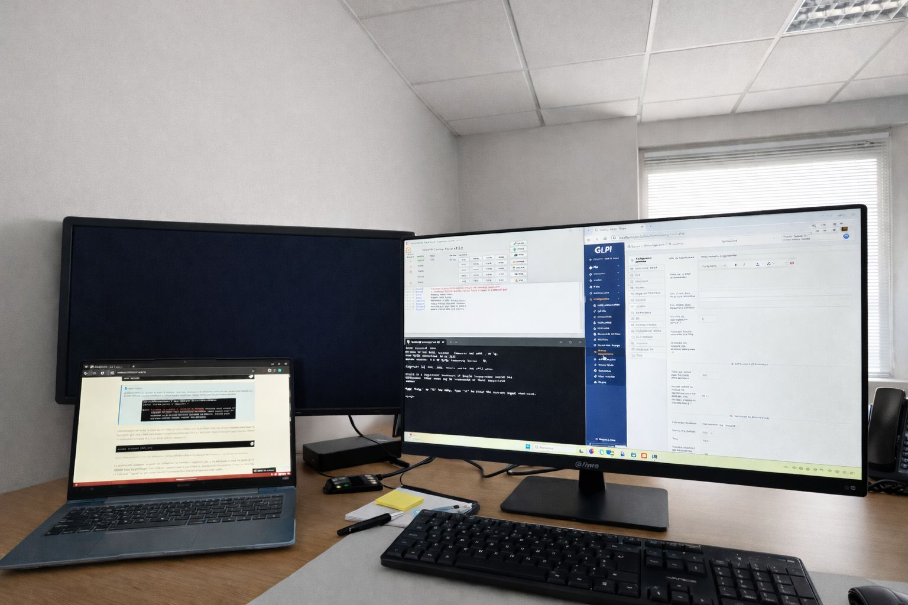
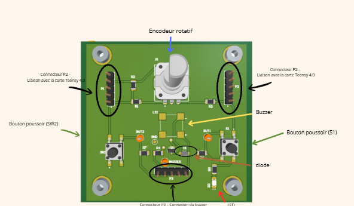
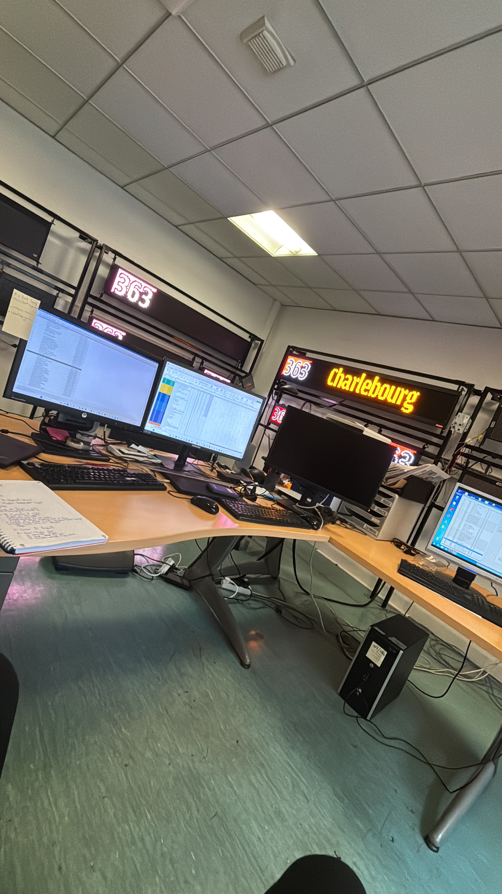

Apprendre
Formations, certifications et apprentissage continu pour consolider mes fondamentaux.
Je construis progressivement mon expertise en cybersécurité à travers des expériences techniques, des projets concrets et des labs pratiques. Mon objectif : explorer les différents domaines de la sécurité informatique et continuer à apprendre sur le terrain.
Je ne cherche pas à me limiter à une seule spécialité. Je souhaite découvrir les différentes facettes de la cybersécurité, comprendre leurs interactions et construire mon orientation grâce à la pratique.
Formations, certifications et apprentissage continu pour consolider mes fondamentaux.
Labs, challenges et projets techniques pour transformer la théorie en réflexes.
Des projets concrets mêlant systèmes, réseaux, électronique et développement.
Des domaines que j'explore et que je souhaite approfondir au fil de mes expériences.
Je privilégie les réalisations directement liées à la cybersécurité, aux systèmes et aux réseaux. Les projets plus éloignés restent secondaires afin de garder une lecture claire de mon profil.
Mise en place autonome d'une solution GLPI pour structurer la gestion des tickets et des demandes clients. Installation de l'environnement local avec XAMPP, configuration d'Apache, MariaDB, phpMyAdmin, puis déploiement et paramétrage de GLPI.

Installation et configuration réalisées en autonomie, avec vérification du fonctionnement de la plateforme et adaptation de l'environnement pour répondre au besoin opérationnel.
La solution a été intégrée à l'environnement de travail afin de faciliter le suivi des demandes et incidents.

Conception d'un banc de test portable destiné à faciliter la validation d'une liaison fibre. Le système permet de mesurer la qualité de la liaison, d'afficher les résultats et de guider le technicien via une IHM embarquée.

Navigation par encodeur et boutons, affichage OLED, logique des menus, intégration des périphériques I²C et résolution de problèmes matériels/logiciels rencontrés pendant les tests.
Tests progressifs, analyse des communications, débogage et intégration jusqu'à obtenir une interface stable et exploitable.
Plateforme de pratique utilisée pour consolider mes connaissances par l'expérimentation : rooms, challenges et mises en situation. Une démarche volontairement généraliste pour explorer plusieurs domaines de la cybersécurité.
Projet personnel de conception d'application. Présenté ici comme une réalisation complémentaire, sans prendre le dessus sur les projets techniques liés à la cybersécurité.
Conception d'un concept de marketplace de réparation : parcours utilisateur, fonctionnalités, logique métier et expérience UX/UI.
Certifications et formations complétées pour structurer mes connaissances en cybersécurité.
 2026
2026Parcours pratique couvrant notamment OSINT, Digital Forensics, Vulnerability Management, Dark Web Operations, Threat Hunting et Network Analysis.
Voir le certificat ↗ 2026
2026Formation consacrée aux fondamentaux de la cybersécurité et du cloud.
Voir le certificat ↗Deux recommandations complémentaires : l'une issue de mon expérience professionnelle chez Secursense, l'autre de mon parcours académique à Schola Nova.
Dirigeant — Secursense
« Sérieux, rigueur, sens des responsabilités, capacité d'apprentissage et professionnalisme. »Lire la recommandation ↗
Professeur agrégé de Sciences de l'ingénieur
Une recommandation qui souligne ma maturité, mon investissement et ma capacité de travail, notamment durant mon cursus BTS CIEL.Lire la recommandation ↗
Des expériences qui m'ont progressivement rapproché des systèmes, des réseaux et de la cybersécurité, avec une place importante donnée au support, au diagnostic, à l'administration et à la résolution de problèmes.
Au sein de l'environnement informatique, participation à l'administration quotidienne du poste de travail et des services Microsoft, au suivi du parc et à des actions de sensibilisation à la sécurité.


Intervention sur des environnements clients avec une forte dimension systèmes, réseaux, support et déploiement. Une expérience qui m'a permis de passer du diagnostic à l'intervention concrète sur le terrain.
Expérience technique orientée électronique et maintenance, avec une dimension de documentation et de travail autour des problématiques de cybersécurité.


Une première expérience professionnelle orientée communication et relation client, utile pour développer des compétences transférables : écoute, organisation, autonomie et compréhension du besoin.
Des formations qui m'ont progressivement conduit vers la cybersécurité, les systèmes, les réseaux et les technologies numériques.
Cybersécurité, Informatique & Réseaux — Option B Électronique et Réseaux
Schola Nova · ParisFormation supérieure orientée cybersécurité
Paris School of Technology & Business · ParisSciences et Technologies de l'Industrie et du Développement Durable
Lycée Chaptal · ParisÀ la recherche d'une alternance en cybersécurité pour continuer à apprendre, expérimenter et contribuer à des projets concrets.